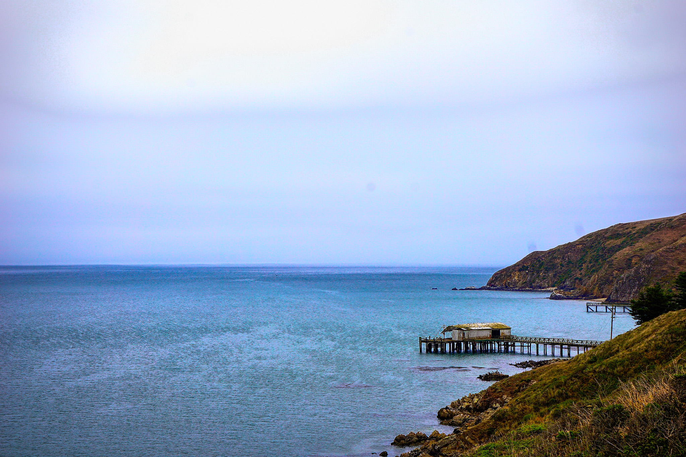
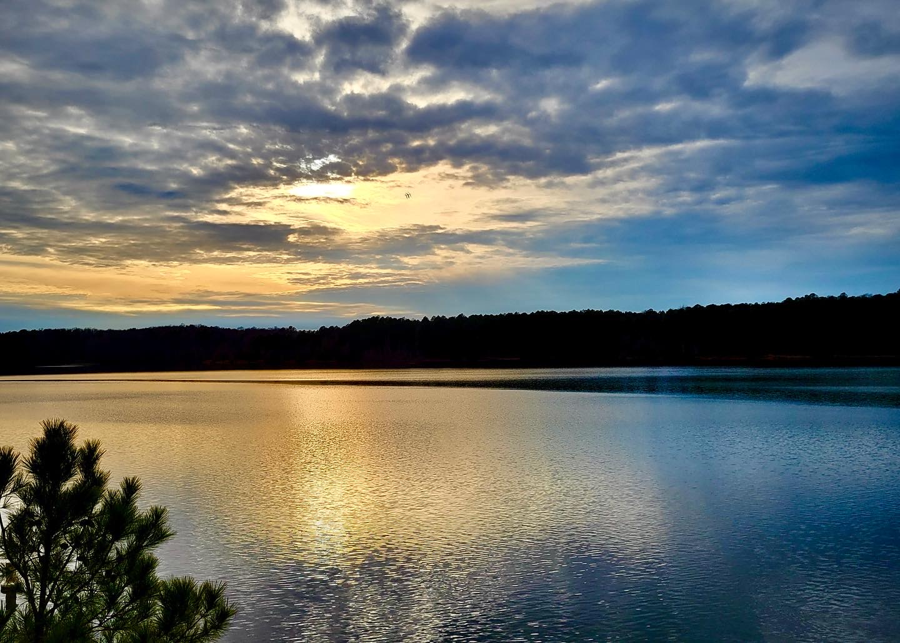

Personal Page
Hello! My name is Jonathan. At the time creating this site, I'm 19 years old, currently working my way through an associates degree.
My hobbies include photography, travel, hiking, running, and lots of art. I probabaly enjoy too many forms of art, though I don't endulge
much in the creations myself. I love trying to interpret the messages behind a work and noticing the fine details that most glances wouldn't notice.


Above, I attached two examples of photographs I have taken in the past! Aside from sketching or drawing, photography is my next favorite form of art.
The first example on the left was captured in Drakes Bay, California. I remember it being a popular spot to visit for all the seals on the beach.
The second example shown on the right was taken at Falls Lake, North Carolina. I have not been in North Carolina very long,
so I don't have many pictures from here yet, however I'm planning to take advantage of my free time over the summers to try and find new places to
explore. Originally, I'm from California but I moved to North Carolina in the summer of 2022. Being here for almost a year now has pretty much
created a "new life" for me, but it has helped me become a better student and person in general, so you won't hear me complaining!
Links to Following and Previous Pages
Home Page
Education and Careers Page
Contact Page